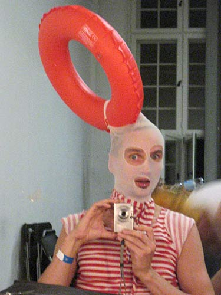
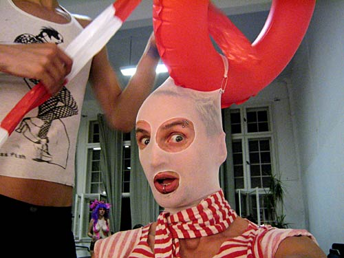
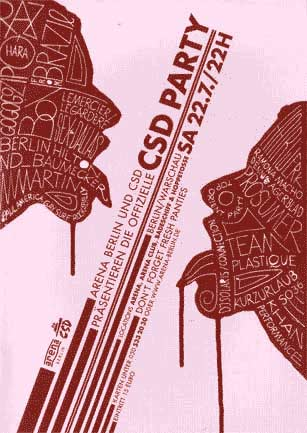
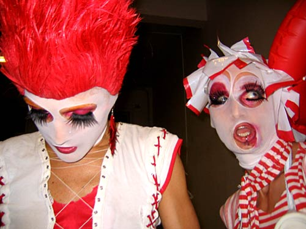
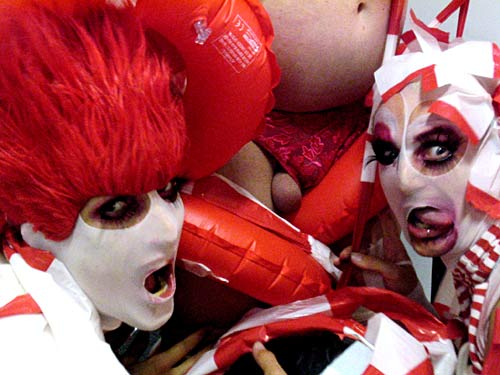
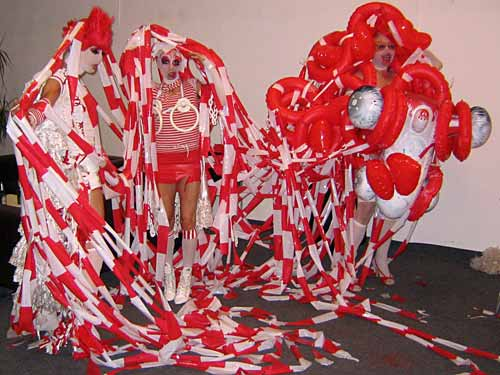

Dennis Agerblad at the CSD Party, Arena, Berlin. |

Dennis Agerblad

Dennis Agerblad


Dennis Agerblad

Hairwerk and Dennis Agerblad
Ramona Macho and Dennis Agerblad

Hairwerk, Ramona Macho and Dennis Agerblad

Hairwerk, Ramona Macho and Dennis Agerblad